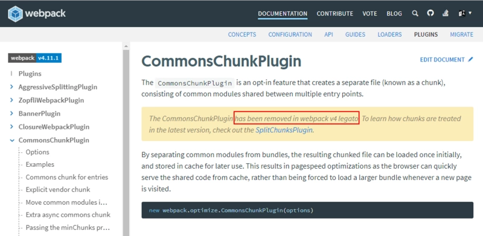
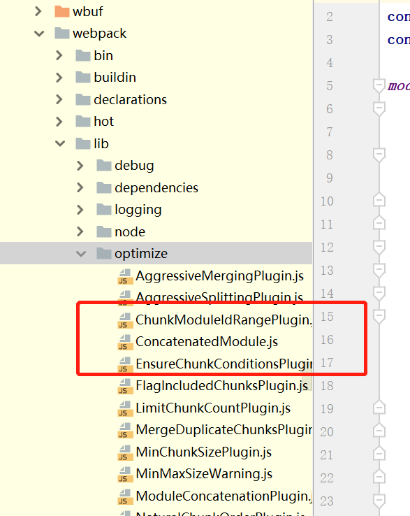
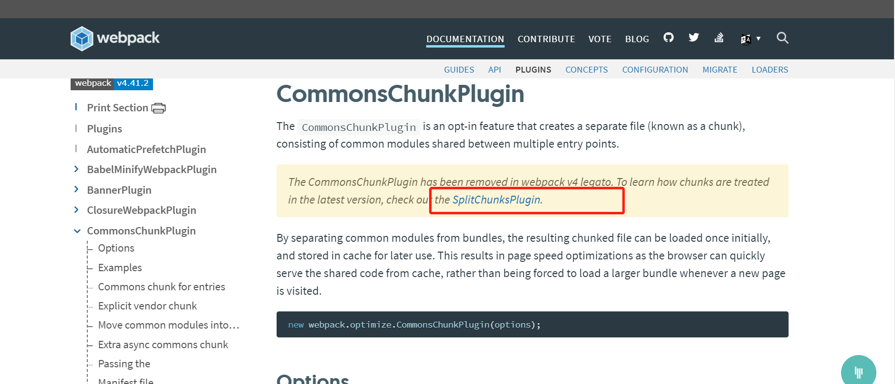
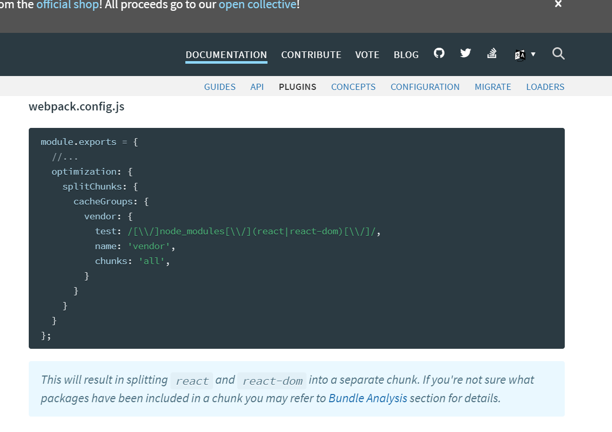

1.在指南的缓存章节里
webpack.config.js文件中，使用new的方法会报错
const webpack = require('webpack');
+ new webpack.optimize.CommonsChunkPlugin({
+ name: 'vendor'
+ }),
new webpack.optimize.CommonsChunkPlugin({
name: 'manifest'
})

会提示CommonsChunkPlugin已被移除出webpack

检查已经下载的webpack模块，确实没有这个以c开头的文件了，不过官网也给出了解决的方案，去查找SplitChunksPlugin组件

vendor和manifest需要分开写键值对在cacheGroups中

optimization: {
splitChunks: {
cacheGroups: {
vendor: {
name: 'vendor',
chunks: 'initial',
minChunks: 2
},
manifest: {
name: 'manifest',
chunks: 'initial',
minChunks: 2
}
}
}
},
manifest是我照着加的，用npm run build跑了一下没有什么问题
这就是我总结的替代多个new webpack.optimize.CommonsChunkPlugin的方案，希望能够有所帮助。